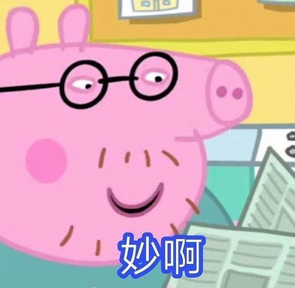
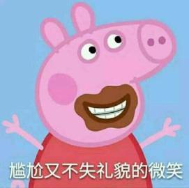
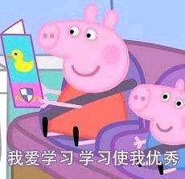

收获与感动
这是一部英国的儿童动画片。但是她不仅仅是给孩子看的。有的时候大人们也在这部片子里面看到了自己的影子。
那些美好却还来不及成为的影子。
这个系列有些年头了。从04年开播起到今天她已经13年了。
依然收到了全世界各地孩子们的喜爱。谁说小动物就没有可看性了？
我们从里面看到了一种英国式的完美田园家庭下成长的孩子们。
小猪佩琪就是那个平凡家庭中长大的，没有什么特别的优点，却异常的惹人喜爱的小姑娘。个性。
这个片子最适合的是3岁到6岁之间还没有上小学的孩子们观看。
 每个孩子都在这期间树立其他们独特的性格。佩琪喜欢交流、情绪化、乐观，有礼貌、爱交友，甚至她对朋友的朋友也保持一种谦逊。
她的弟弟乔治是那种隔壁家爱闹腾的熊孩子，他天生的有一种让想象力变成现实的能力，崇尚勇力，却也勇敢机智。还有些内秀~！十分的可爱。
还有慢半拍的佩德罗，有利落的丹尼，内向的艾米丽，小聪明的苏西等等！每个人物都具有个性，却并不会让人感觉尖锐。
完整的保留了个性的美好。启蒙。片子轻松愉快中让孩子体会了很多东西，却不让人有说教的感觉。
比如泥坑，一般的大人嫌弃脏不准孩子接触。可是人是从田园中走出来的，对泥土有天生的喜爱。
更不用说爱尔兰人天生的爱在泥里打转。解放天性是这个片子潜移默化的教育；比如说秘密，孩子在这个时期已经开始明白有些事情是独一无二的，不能与人分享的。片子对那些无伤大雅的小事情，是可以和好朋友分享的，同时分享秘密也让大家彼此更加亲密。
孩子的秘密其实拥有吸引人的特点。成人就不会那么容易敞开心扉。甚至有些大人会错误的引导孩子。不能体会那种分享的喜悦；比如说画画。大人并不能告诉孩子什么是画画，而是告诉你画画是一种技能。动画片很好的告诉了孩子，什么是画画。简单的图形，简单景物，如果包含一些突如其来的巧合，让画画成为一种独特记忆。
这是动画片创作者的神来之笔。爱与被爱。说实话，能用一部动画能将这个主题体现出来的人，我都认为是拥有大师一般的水平。而动画用了很多篇幅去体现亲情友情爱情（当然是父母、爷爷奶奶之间的那种）用一种不同于成人世界的封闭的笔调，去描绘大自然不同物种的那种天然的感情。比如在朋友家过夜，虽然大家都很开心，但这种开心不能破坏主人家的正常生活。比如说生病，自己生病了有医生会救治，而医生也会生病，也要大家去关爱。又比如说猪妈妈明显是一个女强人，但她总是能将自己隐藏在猪爸爸之后，强调出爸爸的优秀。
还有那些憨态可掬的鸭子们，每次都能得到一家人很好的款待。不因为她们非我族类就用大自然法则去对待它们。这些高贵的品质与其说是理想，不如说作者拥有一颗完整的童心。要让这种人类最高贵的品质传递给孩子们。难能可贵~！成人世界的切入，大人们的工作，大人们的缺点，大人们独特的思维方式。在这个系列当中也有很轻度的描绘。比如说兔子小姐摔伤腿的那集。孩子们看到了术业有专攻这点。大人并不是万能的。并不是每个工作都可以随便调换的。孩子们开始明白大人的工作和他们的角色游戏是不同的。
又比如说纸飞机那集，父亲教会了孩子们折纸飞机，却没有告诉孩子们不是什么纸都可以用来折纸飞机的，特别是有些纸是可以飞很远很远很有用的纸，是不可以拿来乱玩的。这比抓着孩子小错误数落孩子顽皮的做法好得多。创作者甚至将猪爸爸这种做事不积极，没条理描绘的很呆萌。仿佛是一只比佩琪还要幼稚的大人一般，放在一个水平线上让孩子体会了平等和理解。实属不易！当然在剧中这个可爱的猪爸爸也有他过人的一面，跳泥坑大师！虽然这个称谓也许让成人感到非常的可笑，但是对孩子来说，重要的并不是做什么，而是如何做到最好！
这一点在中国，乃至东方。或许都没有多少父母可以说的明白。也许在某一个领域做到最好很难。
但是任何人都可能在某个领域做的很好。而我们应该对那种追求保有一种尊重，而不应该认为这是一个填坑游戏而轻视这件事和做这件事的人。这是成人荒芜的世界中最美的希望。创作者给了孩子！我想好的东西是无需多少褒奖的。当它诞生的那天，就注定它的优秀。就像我们的孩子，我们看待他们就如同孩子们看待佩琪一样。
尽管我们会看到不足，可是孩子们看到了一种理想。一种大人们向往的理想。
每个孩子都在这期间树立其他们独特的性格。佩琪喜欢交流、情绪化、乐观，有礼貌、爱交友，甚至她对朋友的朋友也保持一种谦逊。
她的弟弟乔治是那种隔壁家爱闹腾的熊孩子，他天生的有一种让想象力变成现实的能力，崇尚勇力，却也勇敢机智。还有些内秀~！十分的可爱。
还有慢半拍的佩德罗，有利落的丹尼，内向的艾米丽，小聪明的苏西等等！每个人物都具有个性，却并不会让人感觉尖锐。
完整的保留了个性的美好。启蒙。片子轻松愉快中让孩子体会了很多东西，却不让人有说教的感觉。
比如泥坑，一般的大人嫌弃脏不准孩子接触。可是人是从田园中走出来的，对泥土有天生的喜爱。
更不用说爱尔兰人天生的爱在泥里打转。解放天性是这个片子潜移默化的教育；比如说秘密，孩子在这个时期已经开始明白有些事情是独一无二的，不能与人分享的。片子对那些无伤大雅的小事情，是可以和好朋友分享的，同时分享秘密也让大家彼此更加亲密。
孩子的秘密其实拥有吸引人的特点。成人就不会那么容易敞开心扉。甚至有些大人会错误的引导孩子。不能体会那种分享的喜悦；比如说画画。大人并不能告诉孩子什么是画画，而是告诉你画画是一种技能。动画片很好的告诉了孩子，什么是画画。简单的图形，简单景物，如果包含一些突如其来的巧合，让画画成为一种独特记忆。
这是动画片创作者的神来之笔。爱与被爱。说实话，能用一部动画能将这个主题体现出来的人，我都认为是拥有大师一般的水平。而动画用了很多篇幅去体现亲情友情爱情（当然是父母、爷爷奶奶之间的那种）用一种不同于成人世界的封闭的笔调，去描绘大自然不同物种的那种天然的感情。比如在朋友家过夜，虽然大家都很开心，但这种开心不能破坏主人家的正常生活。比如说生病，自己生病了有医生会救治，而医生也会生病，也要大家去关爱。又比如说猪妈妈明显是一个女强人，但她总是能将自己隐藏在猪爸爸之后，强调出爸爸的优秀。
还有那些憨态可掬的鸭子们，每次都能得到一家人很好的款待。不因为她们非我族类就用大自然法则去对待它们。这些高贵的品质与其说是理想，不如说作者拥有一颗完整的童心。要让这种人类最高贵的品质传递给孩子们。难能可贵~！成人世界的切入，大人们的工作，大人们的缺点，大人们独特的思维方式。在这个系列当中也有很轻度的描绘。比如说兔子小姐摔伤腿的那集。孩子们看到了术业有专攻这点。大人并不是万能的。并不是每个工作都可以随便调换的。孩子们开始明白大人的工作和他们的角色游戏是不同的。
又比如说纸飞机那集，父亲教会了孩子们折纸飞机，却没有告诉孩子们不是什么纸都可以用来折纸飞机的，特别是有些纸是可以飞很远很远很有用的纸，是不可以拿来乱玩的。这比抓着孩子小错误数落孩子顽皮的做法好得多。创作者甚至将猪爸爸这种做事不积极，没条理描绘的很呆萌。仿佛是一只比佩琪还要幼稚的大人一般，放在一个水平线上让孩子体会了平等和理解。实属不易！当然在剧中这个可爱的猪爸爸也有他过人的一面，跳泥坑大师！虽然这个称谓也许让成人感到非常的可笑，但是对孩子来说，重要的并不是做什么，而是如何做到最好！
这一点在中国，乃至东方。或许都没有多少父母可以说的明白。也许在某一个领域做到最好很难。
但是任何人都可能在某个领域做的很好。而我们应该对那种追求保有一种尊重，而不应该认为这是一个填坑游戏而轻视这件事和做这件事的人。这是成人荒芜的世界中最美的希望。创作者给了孩子！我想好的东西是无需多少褒奖的。当它诞生的那天，就注定它的优秀。就像我们的孩子，我们看待他们就如同孩子们看待佩琪一样。
尽管我们会看到不足，可是孩子们看到了一种理想。一种大人们向往的理想。
笑声与歌声
1.晚上佩奇和乔治在猪爷爷家的花园抓蜗牛，猪爷爷把小鸡赶进鸡舍，这个是，狐狸先生突然出现了，问道：小鸡们都睡着了么？ 2.有一集，小狐狸弗雷迪在小兔理查德家玩，狐狸先生过来接他回家，狐狸先生把头探到洞口（兔子家是地洞），然后说了句：嗯~食物的味道……接着，兔妈妈钻了出来…… 3.学校举行游园会还什么会，小朋友们卖各种东西，羚羊夫人发现小象艾米丽卖完了，但是一分钱都没收到，艾米丽还说“我根本不喜欢钱~”东西被狐狸先生全拿走了~ 4.小兔子理查德一说话就脸红……  5.兔小姐是全能，要开学校bus，要当超市售票员，要到博物馆售票，要开飞机开热气球，要当水族箱清洁员，要回收垃圾，要当消防员等等等等。总而言之，整个动画片里，除开几个固定职业，其他的都是兔小姐来做……为此，专门有一集，女王给兔小姐发了一枚勋章。 6.猪爸爸去意大利旅游，每次遇到警察只说一句：虽然我不知道做错了什么，但我保证不会再犯了……
吐槽
最近一直被一只猪困扰，因为在旁人眼中这是一只可爱的粉红色小猪，而且超级卡哇伊，但我怎么看怎么像一个简易的粉色吹风筒。可就是这么一只粉色小猪却在国内的童书市场中站稳了脚跟，更是拥有着一票稳定的受众。
没错，我说的就是家喻户晓的《小猪佩奇》。《小猪佩奇》又名《粉红猪小妹》，英文名《Peppa
Pig》，是一部英国动画片。每集仅五分钟，讲述的是小猪佩奇一家的日常生活。就这样，一只粉红色的小猪带领全家，走上了人生巅峰。豆瓣的评分竟然高达9.3，好于90%的动画片。

《小猪佩奇》的画风走简洁可爱的路线，配合鲜艳的马卡龙色，一看就让人觉得阳光明媚心情不错。虽然故事都非常简单，但节奏明快，笑点突出，不仅宝宝痴迷，大人也不会觉得无聊。《小猪佩奇》2004年在英国首播，很快席卷了全球，全世界超过120个国家的电视频道都播映过，可谓是全世界的孩子疯追。
什么喜羊羊、光头强都抛诸脑后了，满脑子全是那只卡哇伊的小粉猪。
为什么能这么火爆呢，难不成这只猪有什么魔力吗？的确，这群小猪带给孩子的不仅仅是快乐，更会让身为家长的我们陷入沉思——佩奇式的家庭我们能给吗？
对佩奇而言，爸爸妈妈，姐姐和弟弟，爷爷奶奶一家六口是全世界最温暖的地方。（此处会有文化差异）爷爷奶奶喜欢园艺而且有自己的住所，不会干预对佩奇的教育，也不会委曲求全的帮着带孩子，因此，在国内不可调和的婆媳关系根本不存在。时不时的，一家人还会在一起游玩。
在生活中，猪妈妈从来不生气，从来不大声说话，和颜悦色，说话温柔，不高兴也只是一小会，给丈夫应有的尊重和袒护。佩奇的妈妈性格温和，所以温和的批评反而更有力量。在育儿方面，温和不等于没有原则，比如小猪佩奇和乔治永远在晚上7点上床睡觉，但偶尔也会允许宝宝们打破规则。
佩奇的爸爸性情宽厚，有点懒、爱犯傻、爱逞强，但不乏浪漫而且很man。不仅跳泥坑打破世界纪录，长跑、游泳、跳水、滑冰样样精通，擅长手风琴，会打架子鼓。并且爸爸总是引导佩奇，去探索去发现。爸妈互相尊重、彼此相爱，可以给宝宝带来最大的安全感。这样的家庭才是我们要给孩子创造的。家长在陪孩子观看的过程中，也学会了猪爸爸、猪妈妈的教育方式，彼此间更体谅对方，幸福指数直线提升。
 不仅如此吗，佩奇爸爸妈妈的教育方式也是值得我们学习的，坚持自己的原则，带着孩子一起探寻，正像有些教育家所说：有时候父母不要表现得比孩子聪明，而是要让他们去“赢”，这种胜利的喜悦是帮助孩子建立自信的最好方式。这样家庭氛围下的孩子会不优秀吗？孩子看了小猪佩奇后变得更加宽容、大度、友善、勤快、节俭，也知道感恩。包括对善恶对错的区分，对新鲜事物的认知，对一些事情的处理方法等等，都能让孩子们更积极地和周围一切事物和平、和睦相处。
简单的造型，有趣的生活化故事，上幼儿园，生病，看医生，去动物园，郊游，玩儿玩具，交朋友等等这些场景，无一例外地都会发生在孩子们的生活中。当遇到相同问题时，孩子们就会把发生在佩奇身上的故事，还原到自己的生活中，在获得快乐的同时，潜移默化地学到好多知识，也学会了与人相处。他们能通过这种方式，慢慢的长大，逐渐的懂事，对于家长而言又是何其幸运。
不仅如此吗，佩奇爸爸妈妈的教育方式也是值得我们学习的，坚持自己的原则，带着孩子一起探寻，正像有些教育家所说：有时候父母不要表现得比孩子聪明，而是要让他们去“赢”，这种胜利的喜悦是帮助孩子建立自信的最好方式。这样家庭氛围下的孩子会不优秀吗？孩子看了小猪佩奇后变得更加宽容、大度、友善、勤快、节俭，也知道感恩。包括对善恶对错的区分，对新鲜事物的认知，对一些事情的处理方法等等，都能让孩子们更积极地和周围一切事物和平、和睦相处。
简单的造型，有趣的生活化故事，上幼儿园，生病，看医生，去动物园，郊游，玩儿玩具，交朋友等等这些场景，无一例外地都会发生在孩子们的生活中。当遇到相同问题时，孩子们就会把发生在佩奇身上的故事，还原到自己的生活中，在获得快乐的同时，潜移默化地学到好多知识，也学会了与人相处。他们能通过这种方式，慢慢的长大，逐渐的懂事，对于家长而言又是何其幸运。

憧憬
饭饭要吃干净才能走， 分享是一件快乐的事， 爸爸和妈妈永远相亲相爱， 弟弟一直是佩琪的小粉丝， 爷爷和奶奶一直和蔼可亲， 老师尊重所有的学生， 玩游戏永远是有益且快乐的，  ……尽管知道是动画片，我也愿意在那十几分钟内给女儿营造这样的世界